1
Open Standing site & shift
Roster has four tabs. This one holds everyone's default site and shift.
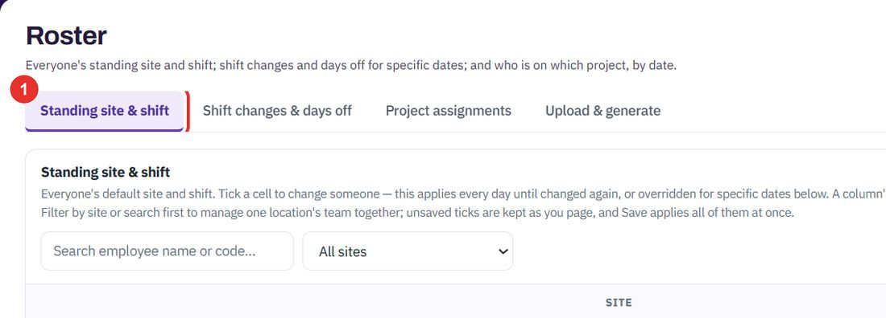
Plan who works where and when. Set the standing site and shift for everyone, change them for specific dates, put people on projects, or upload a whole roster. Each step shows the exact button to click.
Do this once for the team. Open app.bpmsquare.com/wfm/roster.
Roster has four tabs. This one holds everyone's default site and shift.

Search by name or code, or choose a site in the All sites list. Assign all works on everyone currently filtered.
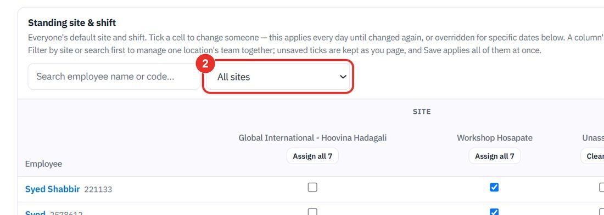
Each person has one site and one shift. A tick applies every day until it is changed again, or overridden for specific dates.
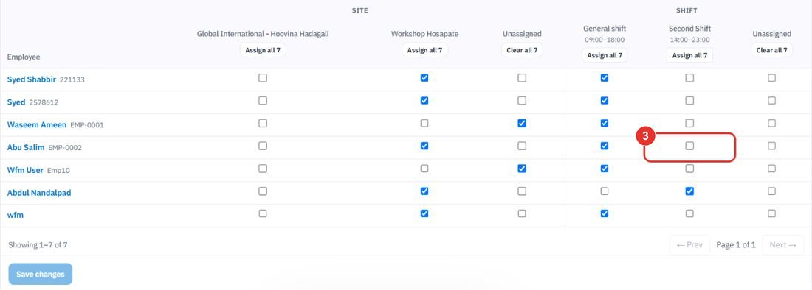
Assign all ticks the column for everyone currently filtered, not just the page you are on. Clear all removes it.
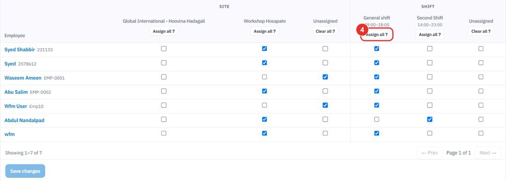
Ticks are kept as you page. Save changes applies all of them at once.
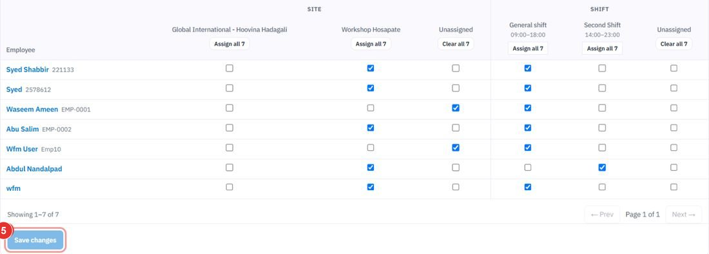
Do this for a one-off change. The standing site and shift stay as they are. For a holiday that applies to everyone, use Leave & Holidays instead.
The list at the bottom, Upcoming — next 30 days, shows changes already made.
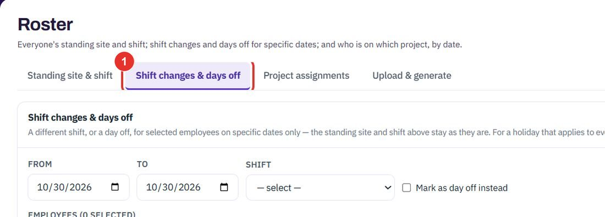
Both start on today. For one day, leave them equal.
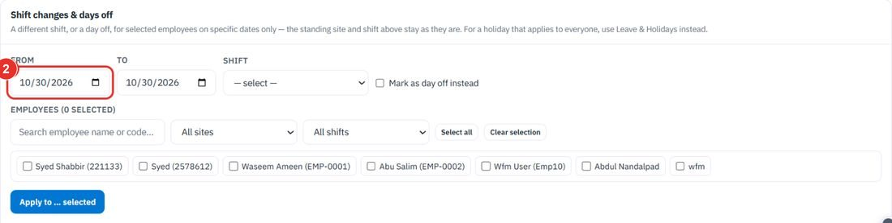
Pick the shift these dates should use, for example General shift (09:00–18:00).
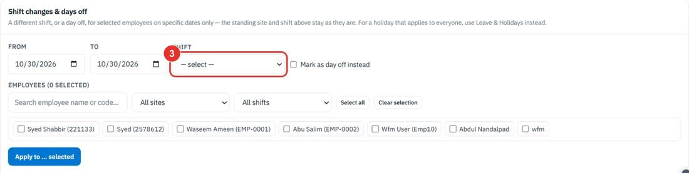
Use this when the person should not work on these dates.
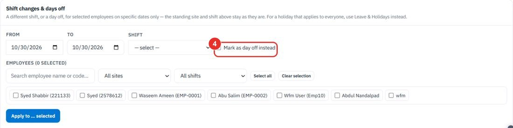
Tick people one by one, or use Select all. The filters narrow the list by site and shift. The heading counts how many are selected.
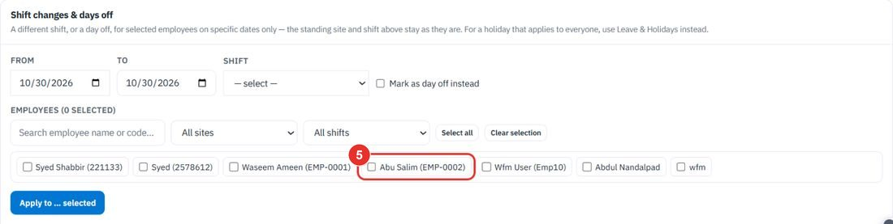
The button shows how many people are selected. Nothing is applied until you click it.
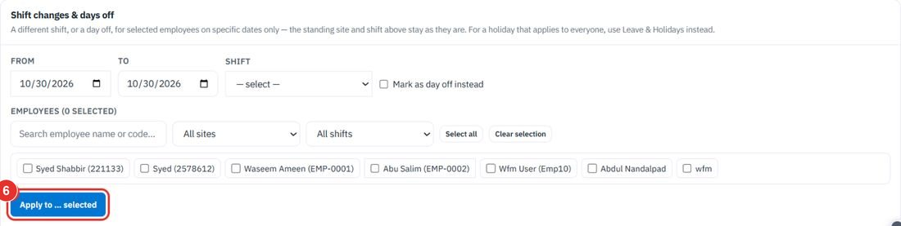
Do this to settle who is on what. Their shift does not change; only where the hours go.
On the dates you choose, this beats the project's own people, shift and site links.
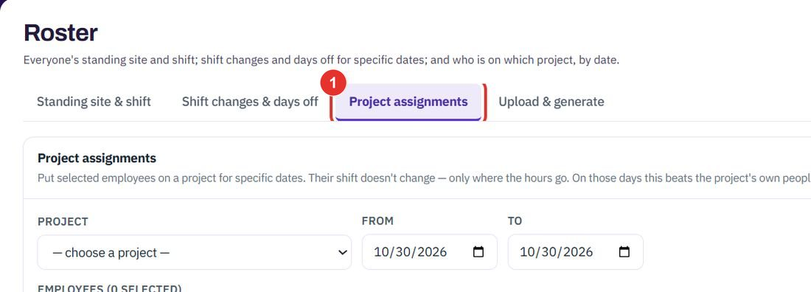
Sub-projects are listed under their project with their level.
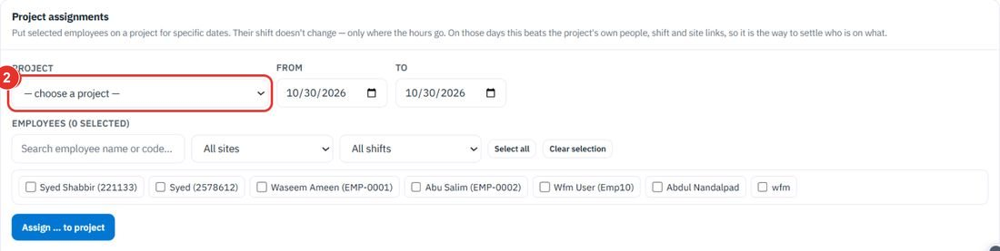
The dates the people are on this project.
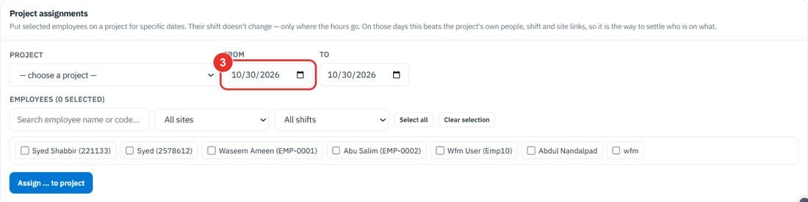
Tick people, or use Select all. The site and shift filters narrow the list.
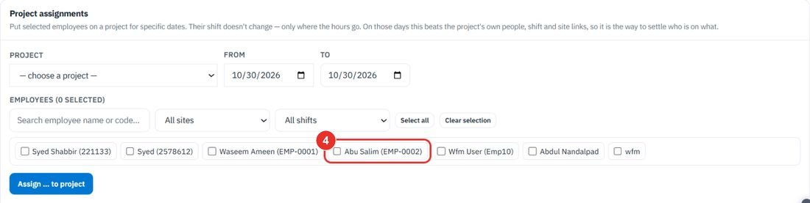
The list On a project — next 30 days below shows what is already assigned.
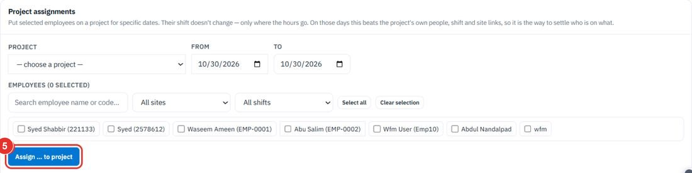
Do this when the roster is long or comes from another system.
The page has two cards: Upload a roster spreadsheet and Alternate-Saturday roster.
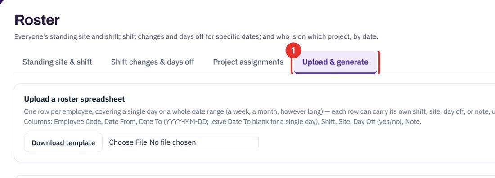
One row per employee. Columns: Employee Code, Date From, Date To (YYYY-MM-DD, empty for a single day), Shift, Site, Day Off (yes/no), Note. This guide does not download the file.
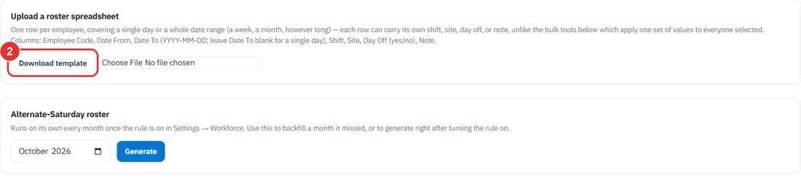
Click Choose File and pick the filled-in spreadsheet.
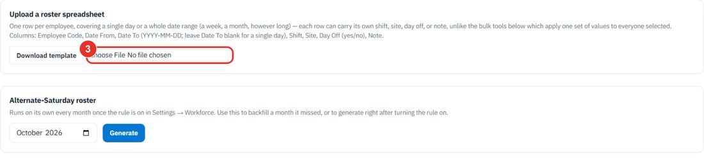
This roster runs on its own every month once the rule is switched on in Settings → Workforce.
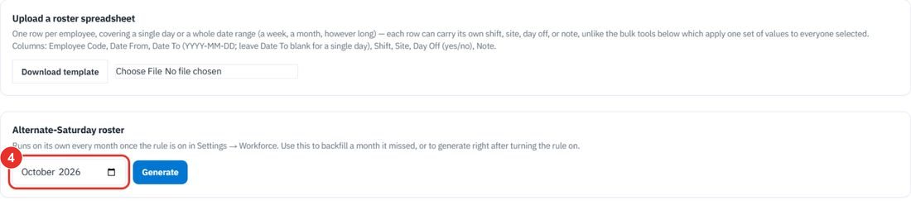
Generate builds the roster for that month. This guide does not click it.
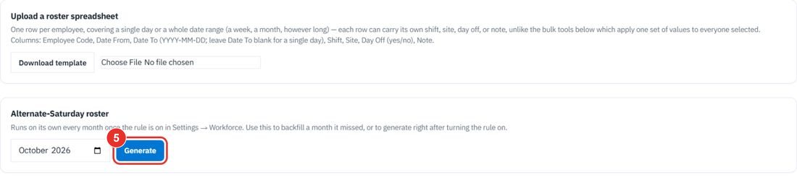
Twenty minutes on a live workspace, with your files and your team.